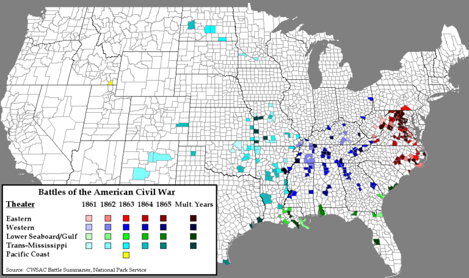

Daryush "Roosh" Valizadeh created ROK in October 2012. You can visit his blog at RooshV.com or follow him on Twitter and Facebook.


The left has decided that they no longer want to live among people who share different views than them. They are plugging their fingers in their ears while yelling racist, fascist, Nazi, and Hitler. They are refusing to yield, compromise, debate, or even accept that their political positions are starting to lose in democratic elections despite suspected cheating that aids them. This has put us squarely in the middle of a cold civil war where both sides of the political spectrum are warming to the idea of killing each other.
A confirmation of the left’s defeat is apparent when you see how their maniacal behavior converts more people, especially moderates, against them. The biggest recruiting tool against the left has become the left. Every time they protest, riot, screech against white people, or show their vulgarity, the remaining mentally sane of America realize that the left’s platform has become so out-of-touch that it no longer represents the basic ideals of the country. The non-cucked right needs to merely show up after temper tantrums and say “Look how crazy they are” for the converts to come pouring in.
Many people are wondering why the left has become a recruiting agent for the right by promoting or engaging in violence. First, they simply don’t know what else to do. When a parent tells a child that he can’t eat candy for every meal, and the child doesn’t have a logical argument about the merits of eating that candy, what does he do? He cries, stomps his feet, threatens to run away, throws out insults like “meanie” and “jerk,” and may even hit his parent to get his way. Donald Trump and his supporters are the parents who won’t yield to an emotional child.
The second reason why the left is hurting their cause with violence is because its billionaire controllers, particularly George Soros, want to divide America to such an irreparable extent that a hot Civil War is forced, giving them an opportunity to increase their power. Soros wants to create so much hate, animosity, and chaos that any resulting conflict has a chance of him holding absolute power, compared to the current situation where he has “only” a moderate amount. In other words, he rather take the chance of war to solidify his grip further.
The leftists that Soros sponsors in the Woman’s Marches and the antifa outbursts may also want a Civil War, but a quick look at their physiognomy shows they would struggle to even go one day without electricity, and that they possess the same psychological directive as the child who is angry that he can’t have candy. Soros is the creepy old neighbor who promises them the candy they crave because he wants to build their trust and get them alone. The child, naive about the extreme danger that lurks behind the likes of Soros, decides to follow him into a van parked in the alley to spite its own parents and their righteous authority.
The reason the right has been reluctant to respond with violence is because they’re winning. Violence comes not from a position of strength, but desperation, when every other option has been extinguished, and should serve as a signal to you of what the real score between the left and right really is. Without violence, the left currently has a 100% chance of losing, continuously and humiliatingly, for at least the next eight years. All the gains that took them decades to achieve will be lost if we ravage and rape their power structures.
With a hot civil war, the left has a 25% chance to win, a bet they are willing to take even though there is a high chance they will be among the first to die in the conflict. A logical person would ask why they would push for a conflict that is sure to destroy the infrastructure of the urban centers they live in, and one where food, water, and other basic necessities would be lacking. The answer comes upon realizing that a child does not realize that eating candy every day will make him sick. The child must therefore be commanded for its own good, because it does not have the capability to take care of itself or understand the consequences of its actions.

Before the warrior in you gets excited at the prospect of crushing the left in a hot war and killing antifa members with high-powered weapons as they wield sharpened mop handles at you, understand that any war in the United States would quickly become a proxy war involving all major military powers, particularly China and Russia, who would rush to spend billions of dollars to have ultimate control of the country. It would be protracted and match the first civil war in terms of brutality, where 2% of the population died.
With the current population, a 2% death rate would result in over 6 million deaths. Compared to the 3,000 that died on 9/11, which was seen as the greatest national tragedy of modern times, a hot war would effect every single American in a profoundly negative way. No sane person with a family would wish for this outcome, which further highlights the insanity of much of the left in pushing for this very result. They rather see millions of people dead and the country ruined than accept a democratic process where their crazy ideas lost.
Even if we avoid a hot war, the underlying problems are not solved. The left will constantly subvert against the country in hopes of achieving a hot war, use both economic and physical violence against those on the right whom they disagree with, and inevitably descend into terroristic violence that rivals ISIS. It’s intolerable for things to proceed as they are, but if we remove a hot war from the table, what option is left?
I recommend the long divorce option, which has three components. The first is extreme law and order. Starting with the Federal government, every single instance of leftist threats, intimidation, and violence must be investigated, prosecuted to the maximize allowable by law, and publicized. The left have been getting away with their illegal acts for too long, to the point where violent protesters don’t even fear arrest, thanks to Democratic mayors and police chiefs who allow it. The FBI must uphold the law and punish those who break it, and municipalities or universities that allow illegal acts must be punished through withholding of Federal funds. This will immediately shrink the number of violent agitators on the left and limit the power of their institutions.
The second component of the long divorce option is to excise the left from all centers of cultural power so that they cannot actively convert the youth. The fake news, already on its last legs, must be replaced by organizations that are not so vehemently anti-American, academia must be purged, and all globalist traitors working in government, both on the Federal and state level, must be removed from positions of power.
The media is hemorrhaging money and viewers, millions of citizens are getting red pilled to the subversiveness of the academic system (particularly its anti-male and anti-white agenda), and Trump has begun to right the ship in the Federal government, which will certainly trickle down to the local levels. Because the leftist establishment is losing control over their narrative, the younger Generation Z is already showing signs of rightward thinking thanks to being raised on 4chan memes more than TV programming. This means that we simply need to remove millennials from power and wait for them to die of old age or AIDS while preventing them from causing further damage to American institutions.
Halting immigration is the third component of the long divorce option. The left has not been able to show how immigrants benefit American citizens besides more diverse restaurant options, and emotional pleas of “human rights” and “compassion” is not sufficient enough to turn the United States into a big welfare office. Open-borders immigration is hurting existing citizens, serving as a cynical means for leftists to gain more votes in elections while browbeating their enemies with “hate speech” codes that demand you love non-Americans more than Americans.
We must also advocate for a white population that increases from where it currently stands, because America is no longer America if that number dips below 50%, and will instead look something like an international airport. Once immigration is stopped, and illegal citizens are deported, it will become monumentally more difficult for open-borders politicians to win nationally again. This can be absolutely ensured if woman’s suffrage is repealed, a proposition that I know many find unpalatable, but one that would usher in an era of permanent winning.
For us to win without a hot civil war, we have to retake the reins of power and peacefully co-exist with bitter leftists over the next fifty years while the culture slowly heals itself. Once institutions are purged of anti-American leftists, the new left will exist in more of a classical liberal form and believe in nominally nationalist ideas while accepting cultural values that are shy of traditional. The long divorce option will not excite you because of the length it takes to see a resolution, but it’s one that will preserve life and the existing infrastructure of the United States.
There are four outcomes that can proceed from the juncture of which we stand. The first is a globalist resurgence at the polls thanks to demographic changes that push the vote far to the left, starting in 2024. If this happens, we will have a president that is more authoritarian than Hillary Clinton. The boot will come down on all facets of American life, especially speech, and we will essentially be living in an open-air prison.
The second outcome is a hot war where we win. The country will be ravaged and millions will die, but at least most of the deaths will be leftists.
The third option is a hot war where we lose because of foreign involvement. Not only are we much more likely to die in this engagement, but the globalist boot will come down with such a viciousness that those on the right who survive may hope that they had died in the war.
And the fourth option is the long divorce, one that we will easily win if the recommendations I made above are taken. Very few people die and life can proceed with high stability and prosperity for the majority of the country.
The globalist left has so damaged the country from the decades they’ve been in power that there is no quick fix, and those of us who are alive today will likely not see a resolution that can be argued as “complete victory” during our lifetimes. I understand the frustration that many on the right have, and the desire they have to be immediately cured of poisons that the left has unleashed, but we must carefully analyze any outcome that results in the deaths of our loved ones and even ourselves. There is a time and place to die for what you believe in, but I hope I have convinced you that we have not yet reached that critical moment and that we can avoid the downsides of a hot civil war and the globalist boot by taking on the option of the long divorce to still win in the end.
The laws we have on the books are enough—let’s enforce those and allow the country to focus on itself instead of empire building and policing while the media and universities collapse upon the weight of their own lies and degeneracy. Besides, the entertainment value in watching the left screech and yell for the next several decades is sure to bring us reams of pleasure. That’s a better outcome than outright war.
This article was originally published On Roosh V.
Read Next: How To Save Western Civilization